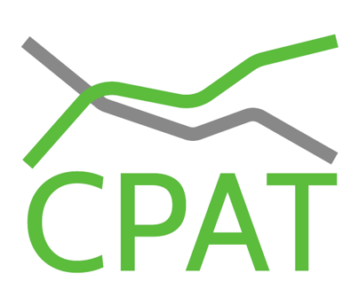

CPAT Documentation
Cover

Foreword
Why CPAT?
The world faces the interconnected challenges of accelerating development and poverty reduction while addressing the climate challenge. Current policies, including climate commitments are not yet aligned with the Paris Agreement’s goal to hold “the increase in the global average temperature to well below 2°C above pre-industrial levels” and pursue efforts “to limit the temperature increase to 1.5°C above pre-industrial levels”. Much more action will be needed, despite a backdrop of multiple crises, slow growth, high debt and limited fiscal space. To meet these temperature levels, global greenhouse gas emissions must be cut by 21 to 43 percent by 2030 compared to 2019 (IPCC, AR6, Summary for Policymakers, Table XX). Such an unprecedented rate of decarbonization necessitates climate mitigation policies across countries, notably carbon pricing, fossil fuel subsidy reform, renewable subsidies, feebates, emission rate regulations, and public investments. To design and implement effective, efficient, and equitable policies governments need tools to assess economic, environmental, fiscal, and social impacts. To support this effort, the IMF and World Bank are making their joint Climate Policy Assessment Tool (CPAT) available to governments.
Among the proposed climate policies in the tool, carbon pricing offers an opportunity for countries to enhance their mobilization of domestic resources and improve the efficiency of the tax system, while creating an incentive for all economic actors – firms, investors, and households – to reduce their carbon emissions and favor greener technologies and behaviors. Combined with appropriate regulations and investments, carbon pricing is a key policy for countries to align their development and climate objectives. In particular, carbon pricing can offer a more efficient option to raise much-needed tax revenues, and generate short-term economic benefits through less distortive tax systems or enhanced investment in government services and infrastructure. It also provides financial resources that can be deployed to protect the poor and vulnerable populations against negative implications and avoid regressive impacts. Other development benefits include improvements in human health due to the co-emission of carbon emissions and local pollutants, and reductions in congestion and traffic-related accidents, for example as a result of a modal shift from private vehicles to public transit or soft modes.
What is CPAT
The Climate Policy Assessment Tool (CPAT) was developed to help countries provide a rapid evaluation of the potential impacts of climate policy reforms. As a global tool covering more than 180 countries, CPAT can be used as a one-stop-shop by anyone who is interested in a quick diagnostic of the potential benefits of a carbon price reform across multiple key dimensions, including not only emissions reduction potential and macroeconomic aggregates but also air pollution and health, road fatalities and congestion, and distributional impacts. It allows for the rapid quantification of impacts of climate mitigation policies, including on energy demand, prices, emissions, revenues, welfare, GDP, households and industries, local air pollution and health, and many other metrics. This documentation describes the CPAT model, its data sources, key assumptions, and caveats.
Why 400 pages of documentation?
CPAT is comprised of several economic models. Economic models describe a simplified reality and so they are, by definition, subject to considerable uncertainty. When interpreting the results of a model, knowing the underlying assumptions is critical. For this reason, several steps have been taken to improve the transparency of CPAT. First, the tool is spreadsheet-based with data and formulas readily accessible within the tool. Second, the tool is accompanied by a detailed 400-page documentation of the methodology which includes important caveats and cautions related to interpretation and data issues.
CPAT is designed to be a global public good. In a constantly evolving world, the tool will need continuous updating and upgrading. By putting together and releasing the detailed CPAT methodology, it is our hope that any interested party can adapt the tool for their own needs and contribute to its further development.